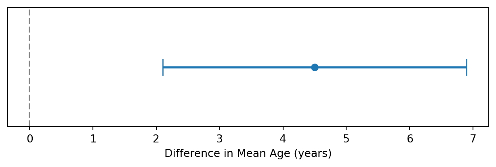
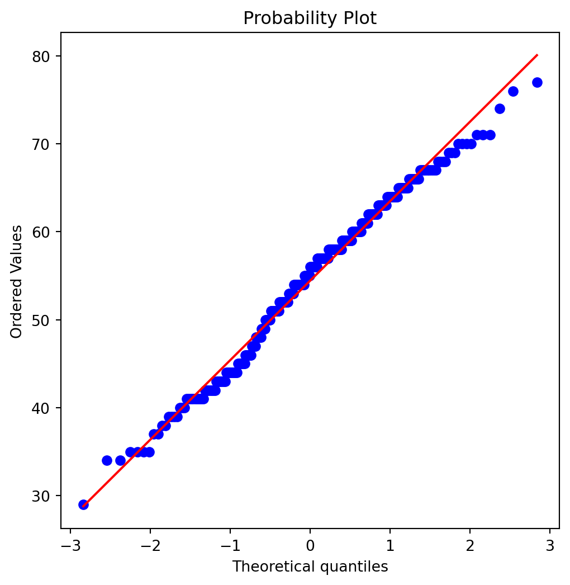
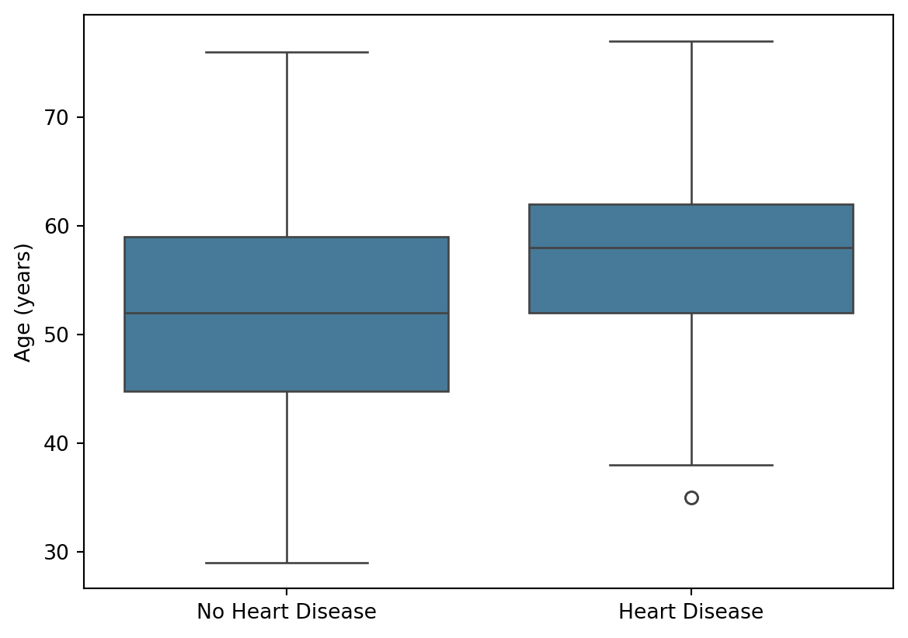
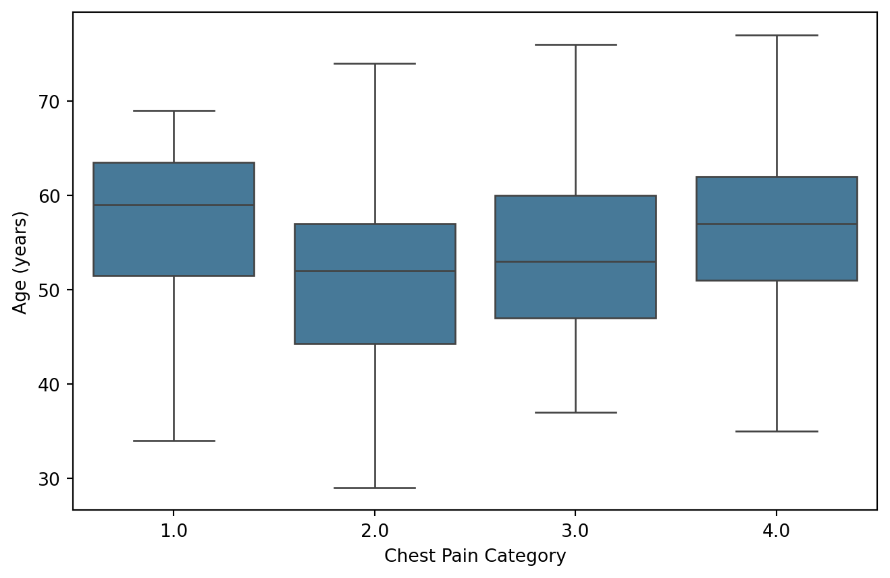
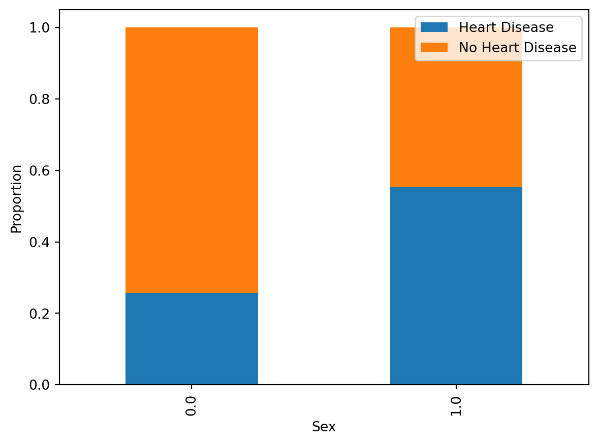

Statistical Hypothesis Testing
From observation to evidence
Learning Objectives
By the end of this section, you should be able to:
- Explain the purpose of statistical hypothesis testing.
- Distinguish between null and alternative hypotheses.
- Understand sampling variability.
- Interpret p-values correctly.
- Explain statistical significance.
- Understand confidence intervals.
- Apply these concepts to real clinical datasets.
Why Do We Need Hypothesis Testing?
In the previous section, we used descriptive statistics and visualisations to explore the Cleveland Heart Disease dataset.
For example, we observed that patients with heart disease appear to be older than patients without heart disease.
However, visual differences alone are not enough.
The observed difference could reflect:
- a genuine difference in the population, or
- random variation within the sample.
Statistical hypothesis testing provides a formal framework for distinguishing between these possibilities.
ImportantKey Question
Are the patterns we observe likely to represent real effects, or could they simply be due to chance?
Null and Alternative Hypotheses
Every statistical test begins with two competing explanations.
Null Hypothesis (\(H_0\))
The null hypothesis assumes that there is no effect, no association, or no difference.
Examples:
- Mean age is the same in both groups.
- Cholesterol levels do not differ between groups.
- Sex is not associated with heart disease.
Alternative Hypothesis (\(H_A\))
The alternative hypothesis assumes that an effect or difference exists.
Examples:
- Mean age differs between groups.
- Cholesterol differs between groups.
- Sex is associated with heart disease.
Cleveland Dataset Example
Suppose we wish to investigate whether age differs between patients with and without heart disease.
We could define:
\[ H_0: \mu_{HD} = \mu_{NoHD} \]
\[ H_A: \mu_{HD} \neq \mu_{NoHD} \]
where:
- \(\mu_{HD}\) = mean age of patients with heart disease
- \(\mu_{NoHD}\) = mean age of patients without heart disease
TipRemember
Hypothesis testing does not prove a hypothesis true or false.
Instead, it evaluates how compatible the observed data are with the null hypothesis.
Sampling Variability
Imagine repeatedly drawing samples from the same population.
Even if the population never changes, different samples will produce slightly different results.
This phenomenon is known as sampling variability.
For example:
| Sample | Mean Age |
|---|---|
| Sample 1 | 53.8 |
| Sample 2 | 55.1 |
| Sample 3 | 54.4 |
| Sample 4 | 56.0 |
Each sample provides a slightly different estimate of the population mean.
Why Does Sampling Variability Matter?
Because differences between groups may arise simply due to random sampling.
Before concluding that a difference is real, we need to determine whether it is larger than we would expect by chance alone.
Sampling Distribution Simulator
Move the sample size slider and observe how the sampling distribution changes.
Sample size: 30
Mean of sample means:
Standard deviation of sample means:
TipWhat to notice
As the sample size increases, the sampling distribution becomes narrower. Larger samples usually give more stable estimates.
The p-value
The p-value is one of the most widely used concepts in statistics.
Unfortunately, it is also one of the most misunderstood.
What Is a p-value?
A p-value quantifies how unusual the observed data would be if the null hypothesis were true.
Small p-values indicate that the observed result would be unlikely under the null hypothesis.
Large p-values indicate that the observed result is reasonably compatible with the null hypothesis.
What a p-value Is NOT
A p-value is not:
- the probability that the null hypothesis is true;
- the probability that the alternative hypothesis is true;
- the probability that the result occurred “by chance”.
These interpretations are incorrect.
Interpreting p-values
| p-value | Interpretation |
|---|---|
| > 0.05 | Data are reasonably compatible with the null hypothesis |
| < 0.05 | Evidence against the null hypothesis |
| < 0.01 | Stronger evidence against the null hypothesis |
| < 0.001 | Very strong evidence against the null hypothesis |
Statistical Significance
A commonly used threshold is:
\[ \alpha = 0.05 \]
If
\[ p < 0.05 \]
we often describe the result as statistically significant.
If
\[ p \ge 0.05 \]
we generally fail to reject the null hypothesis.
WarningImportant
Statistical significance does not necessarily imply clinical significance.
A very small effect may be statistically significant in a large dataset.
Conversely, an important clinical effect may fail to reach statistical significance in a small study.
Type I and Type II Errors
Statistical decisions are not perfect.
Whenever we make a decision based on a sample, there is a possibility of making an error.
| Reality | Statistical Decision | Outcome |
|---|---|---|
| No effect exists | Reject \(H_0\) | Type I Error |
| Effect exists | Fail to reject \(H_0\) | Type II Error |
Type I Error
A Type I error occurs when we conclude that an effect exists when it does not.
This is often called a:
False Positive
Clinical example:
A diagnostic test incorrectly identifies a healthy patient as having a disease.
Type II Error
A Type II error occurs when we fail to detect a genuine effect.
This is often called a:
False Negative
Clinical example:
A diagnostic test fails to identify a patient who truly has the disease.
TipRemember
Type I Error = False Positive
Type II Error = False Negative
Statistical Power
When performing a hypothesis test, we would like to detect genuine effects whenever they exist.
Statistical power is the probability of correctly rejecting the null hypothesis when the alternative hypothesis is true.
Mathematically,
\[ \text{Power} = 1 - \beta \]
where \(\beta\) is the probability of a Type II error.
Higher statistical power means a greater chance of detecting a real effect.
NotePractical Interpretation
A study with low statistical power may fail to detect a genuine difference, even when one truly exists.
Increasing the sample size is one of the most common ways to improve statistical power.
Confidence Intervals
P-values tell us whether a result is statistically significant.
Confidence intervals tell us the range of plausible values for the true population parameter.
Example
Suppose we estimate that patients with heart disease are, on average, 4.5 years older.
A 95% confidence interval might be:
\[ (2.1,\ 6.9) \]
This interval suggests that the true age difference is plausibly between 2.1 and 6.9 years.
Visualising a Confidence Interval
The point estimate represents our best estimate of the effect size.
The confidence interval reflects the uncertainty around that estimate.
Why Confidence Intervals Are Useful
Confidence intervals provide information about:
- direction of the effect;
- magnitude of the effect;
- precision of the estimate.
They are often more informative than p-values alone.
Confidence Intervals and Statistical Significance
For differences between groups:
- If the confidence interval includes 0, the result is often not statistically significant.
- If the confidence interval excludes 0, the result is often statistically significant.
TipWhat Comes Next?
Now that we understand:
- null and alternative hypotheses,
- sampling variability,
- p-values,
- statistical significance,
- confidence intervals,
we can begin selecting and applying statistical tests.
Next we will learn:
- how to choose the correct statistical test,
- how to check assumptions,
- when to use t-tests,
- when to use ANOVA,
- when to use Chi-square tests.
Choosing the Correct Statistical Test
A common question in biostatistics is:
Which statistical test should I use?
The answer depends on:
- the type of variable being analysed;
- the number of groups being compared;
- whether observations are independent;
- whether important assumptions are satisfied.
Choosing an inappropriate test can lead to misleading conclusions.
ImportantKey Principle
Always understand your data before selecting a statistical test.
Understanding Variable Types
Before selecting a statistical test, we must identify the type of variable being analysed.
Numerical Variables
Numerical variables represent measurable quantities.
Examples from the Cleveland dataset include:
- Age
- Cholesterol
- Resting blood pressure
- Maximum heart rate
These variables can be summarised using means, medians, standard deviations, and confidence intervals.
Categorical Variables
Categorical variables represent groups or categories.
Examples from the Cleveland dataset include:
- Sex
- Chest pain type
- Presence of heart disease
These variables are typically summarised using counts and percentages.
Why Does This Matter?
The type of variable largely determines which statistical tests are appropriate.
For example:
- Comparing mean age between groups requires a different test from comparing proportions of males and females.
- Comparing two groups requires a different test from comparing four groups.
A Simple Decision Tree
The following framework provides a useful starting point.
| Research Question | Recommended Test |
|---|---|
| Compare one group against a known value | One-sample t-test |
| Compare two independent groups | Independent t-test |
| Compare paired measurements | Paired t-test |
| Compare more than two groups | ANOVA |
| Compare categorical variables | Chi-square test |
We will explore each of these tests shortly.
Interactive Decision Tool
TipQuick Guide
Ask yourself:
Step 1
What type of outcome are you analysing?
- Numerical
- Categorical
Step 2
How many groups are being compared?
- One
- Two
- More than two
Step 3
Are the observations independent or paired?
The answers will usually determine the appropriate statistical test.
Checking Assumptions
Many statistical tests rely on assumptions about the data.
Common assumptions include:
- independence of observations;
- approximate normality;
- similar variability across groups.
Before performing a statistical test, we should evaluate whether these assumptions are reasonable.
Visual Assessment
Before performing formal tests, it is often helpful to inspect the data visually.
Useful visualisations include:
- Histograms
- Density plots
- Boxplots
- Q-Q plots
Visualisation often reveals patterns that numerical tests may miss.
Q-Q Plots
A Quantile–Quantile (Q-Q) plot compares the observed data against the theoretical quantiles of a normal distribution.
If the points approximately follow a straight line, the data are reasonably consistent with normality.

How to Interpret a Q-Q Plot
- Points close to the line suggest approximate normality.
- Curved patterns may indicate skewness.
- Large departures from the line suggest non-normality.
- Extreme deviations at the ends may indicate outliers.
Shapiro–Wilk Test
The Shapiro–Wilk test formally assesses whether a variable appears normally distributed.
Null Hypothesis
The data follow a normal distribution.
Alternative Hypothesis
The data do not follow a normal distribution.
Example: Age
from scipy.stats import shapiro
stat, p = shapiro(df["age"].dropna())
print(f"Shapiro-Wilk statistic = {stat:.3f}")
print(f"p-value = {p:.3f}")Shapiro-Wilk statistic = 0.986
p-value = 0.006Interpretation:
- If p ≥ 0.05, the data are broadly consistent with normality.
- If p < 0.05, there is evidence against normality.
NoteClinical Interpretation
For age in the Cleveland dataset:
- The Shapiro–Wilk test produces a statistically significant result (p = 0.006).
- Strictly speaking, this suggests that age is not perfectly normally distributed.
However, the Q-Q plot shows only modest departures from normality.
With a sample size of more than 300 patients, many parametric tests (such as the t-test) remain robust to these small deviations.
In practice, statistical decisions should be based on both visual inspection and formal testing.
WarningImportant
Normality tests should not be used mechanically.
In large datasets, very small deviations from normality may produce statistically significant results.
In small datasets, substantial deviations may go undetected.
Always combine formal tests with visual inspection.
Equal Variance
Many parametric tests assume that groups have similar variability.
This assumption can be evaluated using Levene’s test.
Example
Suppose we wish to compare age between patients with and without heart disease.
from scipy.stats import levene
group1 = df[df["heart_disease"] == "Heart Disease"]["age"]
group2 = df[df["heart_disease"] == "No Heart Disease"]["age"]
stat, p = levene(group1, group2)
print(f"Levene statistic = {stat:.3f}")
print(f"p-value = {p:.3f}")Levene statistic = 7.936
p-value = 0.005Interpretation:
- Large p-values suggest similar variability.
- Small p-values suggest unequal variability.
WarningCommon Beginner Mistakes
Avoid these common errors:
- Selecting a statistical test before understanding the variable types.
- Using a t-test without checking assumptions.
- Automatically switching to non-parametric tests whenever a normality test is significant.
- Confusing statistical significance with clinical importance.
- Interpreting p-values as the probability that the null hypothesis is true.
Parametric and Non-Parametric Tests
When assumptions are approximately satisfied, parametric tests are often preferred because they are statistically efficient.
When assumptions are strongly violated, non-parametric alternatives may be more appropriate.
| Parametric Test | Non-Parametric Alternative |
|---|---|
| Independent t-test | Mann–Whitney U |
| Paired t-test | Wilcoxon Signed-Rank |
| ANOVA | Kruskal–Wallis |
When Should Non-Parametric Tests Be Considered?
Non-parametric tests may be useful when:
- distributions are highly skewed;
- substantial outliers are present;
- sample sizes are very small;
- assumptions are clearly violated.
However, they are not automatically superior and should not be used simply because a normality test is statistically significant.
Summary Table
The table below provides a practical guide for selecting common statistical tests.
| Situation | Recommended Test |
|---|---|
| One numerical group vs known value | One-sample t-test |
| Two independent numerical groups | Independent t-test |
| Paired numerical measurements | Paired t-test |
| More than two numerical groups | ANOVA |
| Two categorical variables | Chi-square test |
Try It Yourself
TipExercises
Using the Cleveland dataset:
- Identify three numerical variables.
- Identify three categorical variables.
- Create a Q-Q plot for cholesterol.
- Perform a Shapiro–Wilk test on age.
- Which test would you use to compare age between patients with and without heart disease?
- Which test would you use to compare age across chest pain categories?
- Which test would you use to investigate whether sex is associated with heart disease?
Applying Statistical Tests
We are now ready to perform statistical analyses using the Cleveland Heart Disease dataset.
In this section we will learn how to:
- compare two groups using an independent t-test;
- compare multiple groups using ANOVA;
- investigate associations between categorical variables using a Chi-square test;
- interpret results in a clinical context.
Independent t-Test
When Should We Use an Independent t-Test?
An independent t-test is used to compare the means of a numerical variable between two independent groups.
Examples include:
- Age in patients with and without heart disease.
- Cholesterol in males and females.
- Blood pressure in treatment and control groups.
Assumptions
The independent t-test assumes:
- observations are independent;
- the outcome variable is numerical;
- the distributions are approximately normal;
- variability is reasonably similar between groups.
Cleveland Dataset Example
Research Question
Are patients with heart disease older than patients without heart disease?
Step 1: State the Hypotheses
Null hypothesis:
\[ H_0:\mu_{HD}=\mu_{NoHD} \]
Alternative hypothesis:
\[ H_A:\mu_{HD}\neq\mu_{NoHD} \]
where:
- \(\mu_{HD}\) is the mean age of patients with heart disease;
- \(\mu_{NoHD}\) is the mean age of patients without heart disease.
Visual Comparison

The boxplot suggests that patients with heart disease tend to be older.
But is this difference statistically significant?
Performing the Test
from scipy.stats import ttest_ind
import numpy as np
groups = [
g["age"].dropna()
for _, g in df.groupby("heart_disease")
]
group1 = groups[0]
group2 = groups[1]
t_stat, p_value = ttest_ind(
group1,
group2,
equal_var=False
)
mean_diff = group1.mean() - group2.mean()
se = np.sqrt(
group1.var(ddof=1)/len(group1)
+ group2.var(ddof=1)/len(group2)
)
ci_low = mean_diff - 1.96*se
ci_high = mean_diff + 1.96*se
print(f"t statistic = {t_stat:.3f}")
print(f"p-value = {p_value:.5f}")
print(f"Mean age difference = {mean_diff:.2f} years")
print(f"95% CI = ({ci_low:.2f}, {ci_high:.2f})")t statistic = 4.030
p-value = 0.00007
Mean age difference = 4.04 years
95% CI = (2.08, 6.01)Interpretation
If the p-value is below 0.05:
- we reject the null hypothesis;
- the age difference is statistically significant.
If the p-value is above 0.05:
- we fail to reject the null hypothesis;
- there is insufficient evidence for an age difference.
Why the Confidence Interval Matters
The p-value tells us whether there is evidence for a difference.
The confidence interval tells us how large that difference may be.
For example:
- a statistically significant difference of 0.2 years may have little clinical importance;
- a statistically significant difference of 10 years could be clinically meaningful.
Whenever possible, report both the p-value and the confidence interval.
NoteClinical Interpretation
Even when a result is statistically significant, we should also consider:
- the magnitude of the effect;
- whether the difference is clinically meaningful;
- uncertainty around the estimate.
Analysis of Variance (ANOVA)
When Should We Use ANOVA?
ANOVA is used when comparing a numerical variable across more than two groups.
Examples include:
- Age across chest pain categories.
- Cholesterol across disease severity groups.
- Blood pressure across treatment groups.
Cleveland Dataset Example
Research Question
Does age differ across chest pain categories?
Step 1: State the Hypotheses
Null hypothesis: All chest pain groups have the same mean age.
\[ H_0:\mu_1=\mu_2=\mu_3=\mu_4 \]
Alternative hypothesis:
\[ H_A:\text{Not all means are equal} \]
Visual Comparison

Performing ANOVA
from scipy.stats import f_oneway
groups = [
g["age"].dropna()
for _, g in df.groupby("cp")
]
f_stat, p_value = f_oneway(*groups)
print(f"F statistic = {f_stat:.3f}")
print(f"p-value = {p_value:.5f}")F statistic = 3.364
p-value = 0.01908Interpretation
If p < 0.05:
- at least one group differs from the others.
If p ≥ 0.05:
- there is insufficient evidence that age differs across chest pain categories.
ImportantImportant
ANOVA tells us that a difference exists somewhere among the groups.
It does not identify which specific groups differ.
Additional post-hoc tests are required to determine this.
Chi-Square Test
When Should We Use a Chi-Square Test?
The Chi-square test evaluates whether two categorical variables are associated.
Examples include:
- Sex and heart disease.
- Smoking status and disease.
- Treatment group and outcome.
Cleveland Dataset Example
Research Question
Is sex associated with heart disease?
Step 1: State the Hypotheses
Null hypothesis:
Sex and heart disease are independent.
Alternative hypothesis:
Sex and heart disease are associated.
Contingency Table
table = pd.crosstab(
df["sex"],
df["heart_disease"]
)
table| heart_disease | Heart Disease | No Heart Disease |
|---|---|---|
| sex | ||
| 0.0 | 25 | 72 |
| 1.0 | 114 | 92 |
Performing the Test
from scipy.stats import chi2_contingency
chi2, p_value, dof, expected = chi2_contingency(table)
print(f"Chi-square statistic = {chi2:.3f}")
print(f"p-value = {p_value:.5f}")Chi-square statistic = 22.043
p-value = 0.00000Interpretation
If p < 0.05:
- there is evidence of an association between sex and heart disease.
If p ≥ 0.05:
- there is insufficient evidence of an association.
Visualising the Data

Summary
In this section we learned how to:
- formulate statistical hypotheses;
- compare two groups using an independent t-test;
- compare multiple groups using ANOVA;
- analyse categorical variables using a Chi-square test;
- interpret p-values;
- interpret confidence intervals;
- assess whether findings are clinically meaningful.
Statistical testing is not simply about obtaining a p-value. Good statistical practice requires careful consideration of assumptions, effect sizes, uncertainty, and clinical relevance.
Try It Yourself
TipExercises
Using the Cleveland dataset:
- Compare cholesterol between patients with and without heart disease.
- Compare resting blood pressure between patients with and without heart disease.
- Perform ANOVA using maximum heart rate across chest pain categories.
- Investigate whether chest pain category is associated with heart disease using a Chi-square test.
- Interpret each result in both statistical and clinical terms.